K562 Neither DNase matched - State 20:ReprD (n=28)
K562 Neither DNase matched - State 20:ReprD (n=28)
[
See group descriptions
]
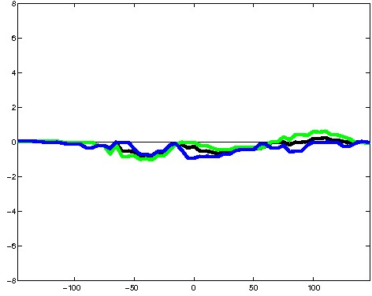
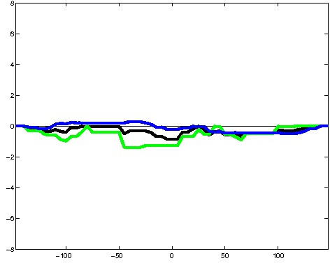
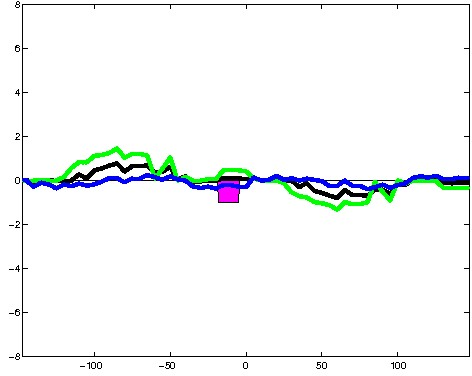
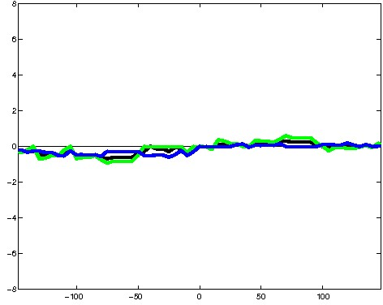
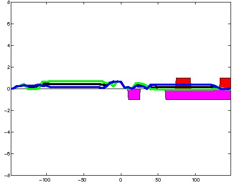
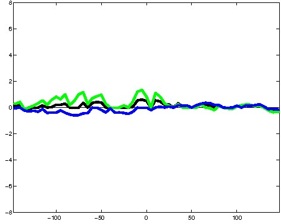
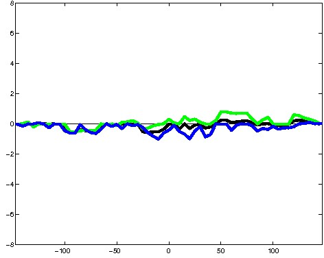
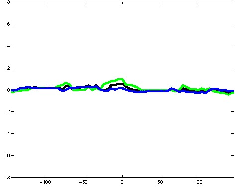
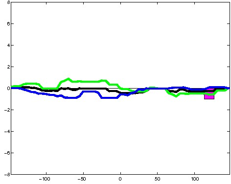
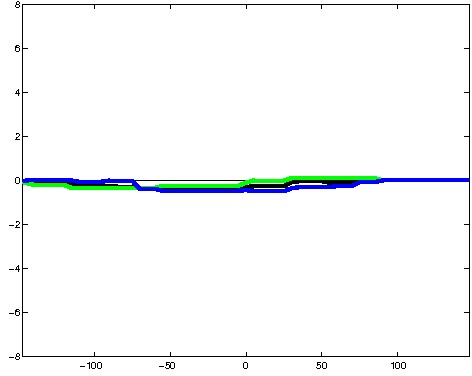
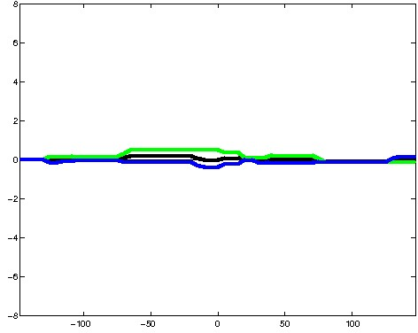
; picked in K562 (state 20:ReprD, DNase); matched; chr6:33,990,029-33,990,323 (295bp)")
; picked in K562 (state 20:ReprD, DNase); matched; chr1:20,617,129-20,617,423 (295bp)")
; picked in K562 (state 20:ReprD, DNase); matched; chr21:45,029,549-45,029,843 (295bp)") 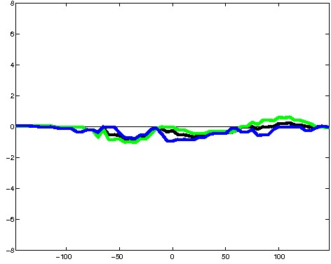
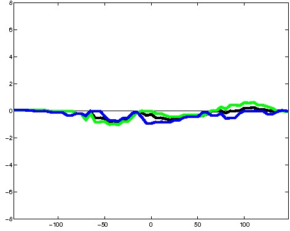
; picked in K562 (state 20:ReprD, DNase); matched; chr1:206,273,249-206,273,543 (295bp)")
; picked in K562 (state 20:ReprD, DNase); matched; chr11:64,439,729-64,440,023 (295bp)") 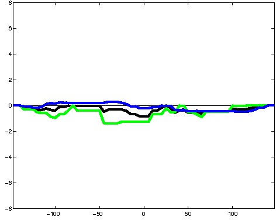
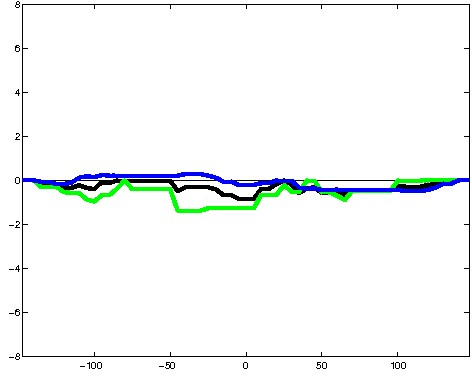
; picked in K562 (state 20:ReprD, DNase); matched; chr1:25,466,729-25,467,023 (295bp)")
; picked in K562 (state 20:ReprD, DNase); matched; chr19:33,638,389-33,638,683 (295bp)") 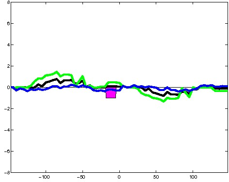
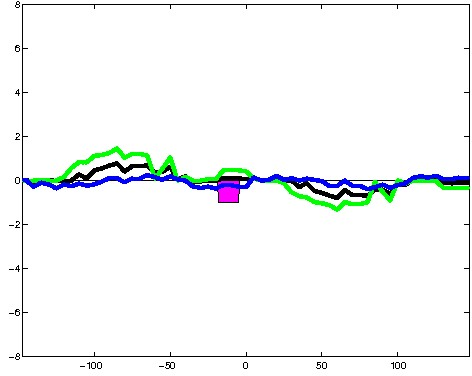
; picked in K562 (state 20:ReprD, DNase); matched; chr1:167,033,889-167,034,183 (295bp)")
; picked in K562 (state 20:ReprD, DNase); matched; chr16:83,847,789-83,848,083 (295bp)") 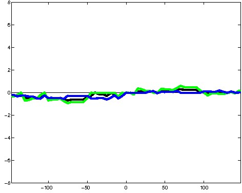
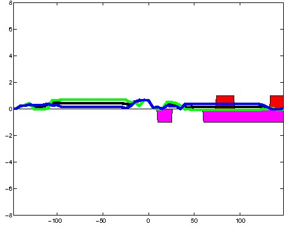
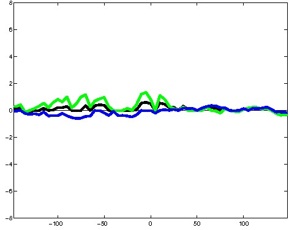
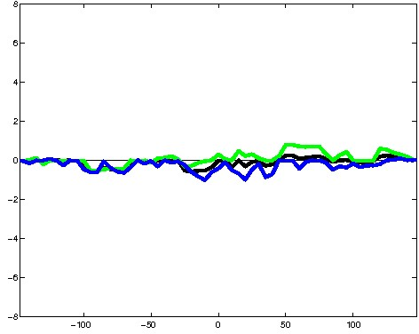
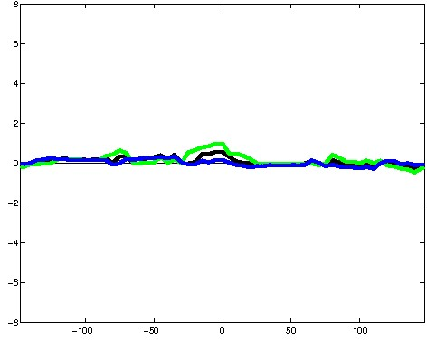
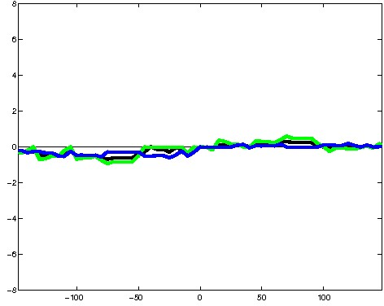
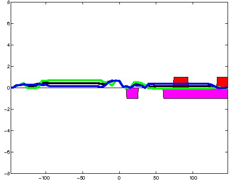
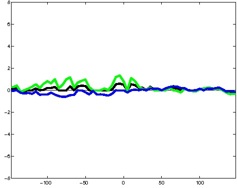
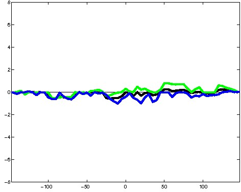
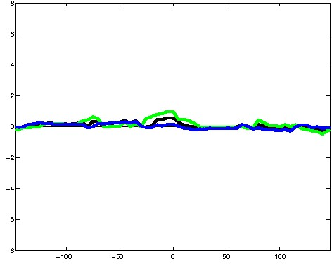
; picked in K562 (state 20:ReprD, DNase); matched; chr8:11,274,109-11,274,403 (295bp)")
; picked in K562 (state 20:ReprD, DNase); matched; chr11:120,067,609-120,067,903 (295bp)") 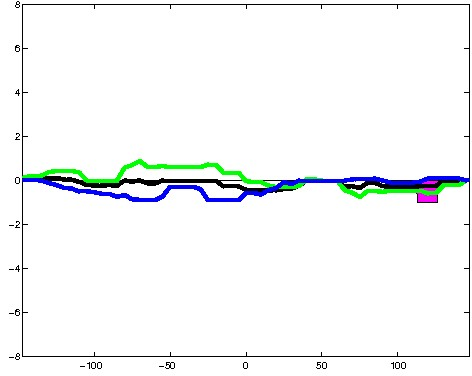
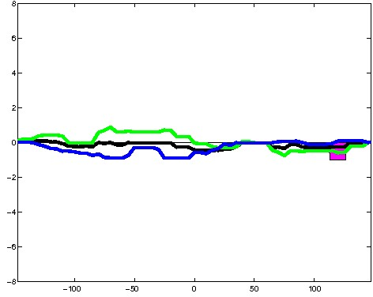
; picked in K562 (state 20:ReprD, DNase); matched; chr3:197,235,069-197,235,363 (295bp)")
; picked in K562 (state 20:ReprD, DNase); matched; chr2:28,773,269-28,773,563 (295bp)")
; picked in K562 (state 20:ReprD, DNase); matched; chr7:132,835,549-132,835,843 (295bp)") 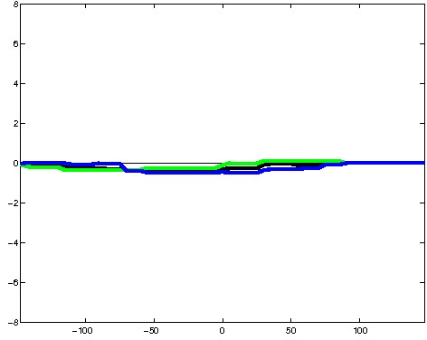
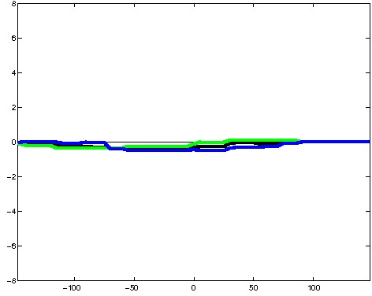
; picked in K562 (state 20:ReprD, DNase); matched; chr3:13,652,849-13,653,143 (295bp)")
; picked in K562 (state 20:ReprD, DNase); matched; chr6:42,337,329-42,337,623 (295bp)") 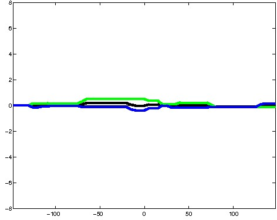
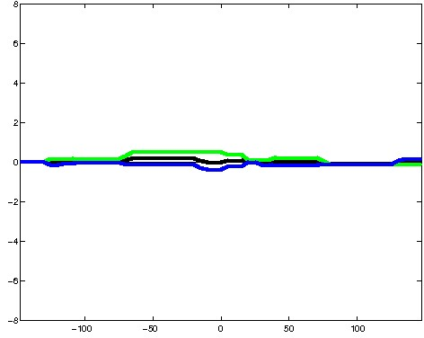
; picked in K562 (state 20:ReprD, DNase); matched; chr7:130,420,829-130,421,123 (295bp)")